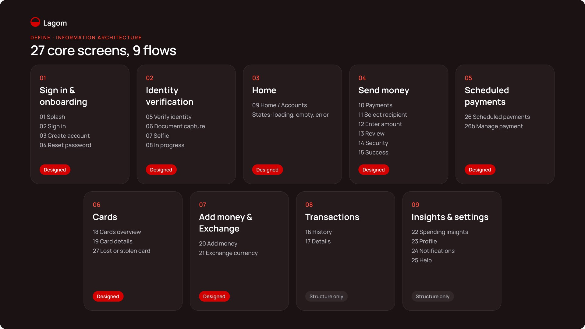
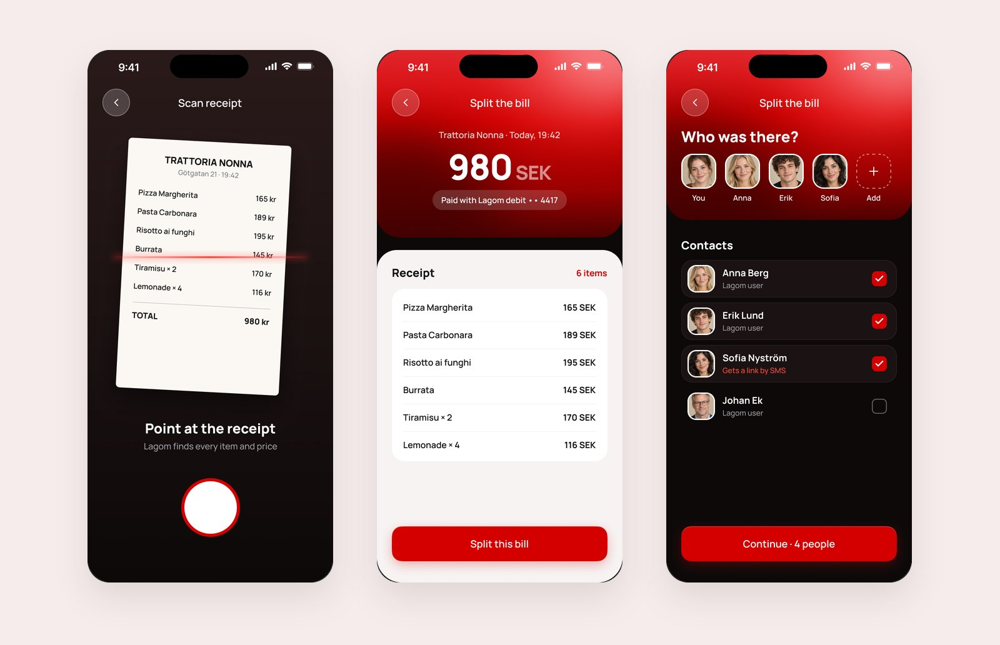
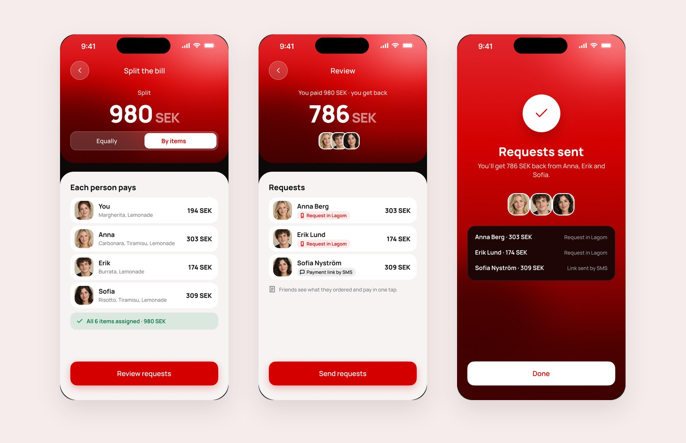
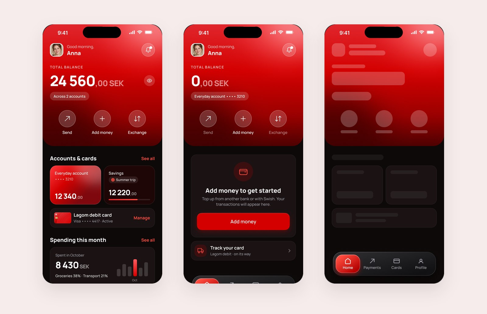
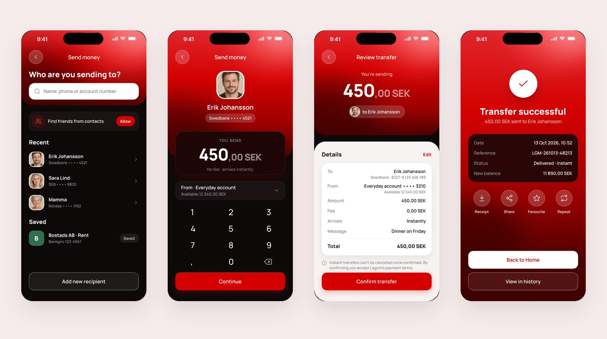
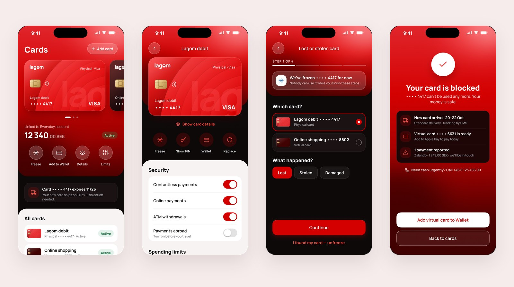
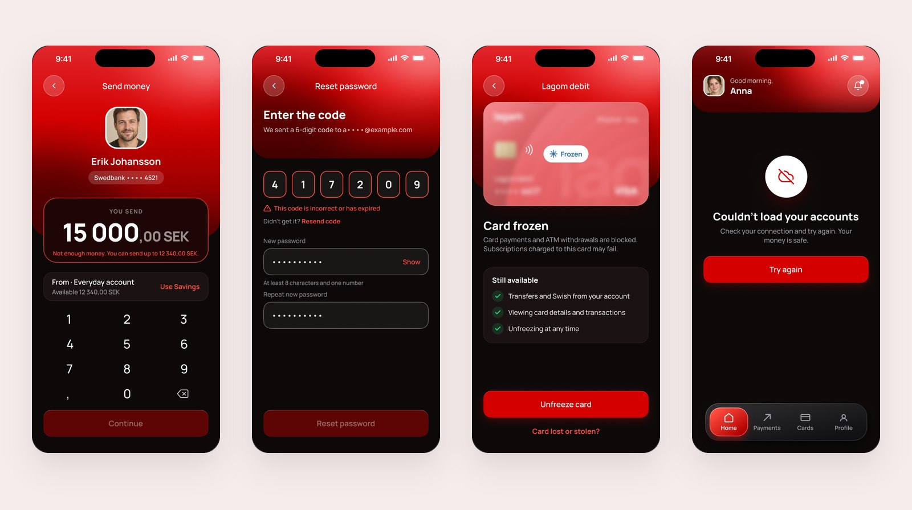
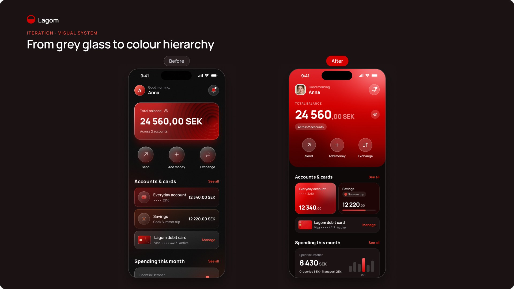
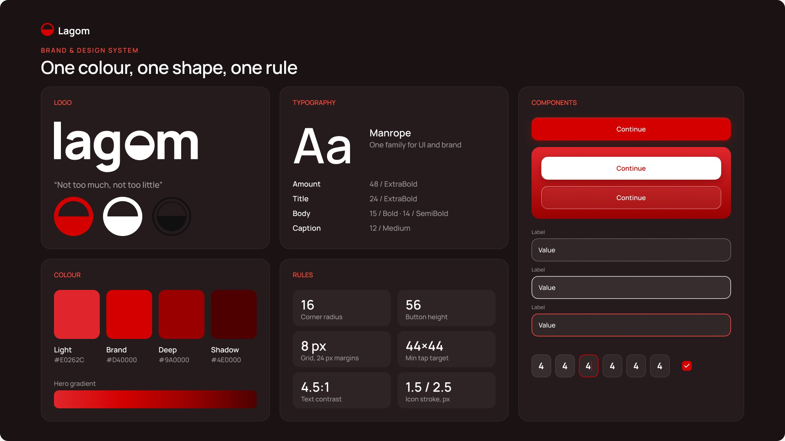

Clearer everyday banking for Sweden
Lagom is a concept mobile bank for Sweden, named after the Swedish word for “just right”. In a market where 95% use Mobile BankID and 91% paid with Swish last month, a new bank can't win by being digital — it has to win on clarity and control. Its signature feature turns splitting a restaurant bill into a few taps.
Before moving to Sweden, I worked on a mobile banking app in Ukraine in a 3-person design team that owned registration, identity verification and bill splitting. That work is under NDA, so Lagom rethinks the same kind of flows for Sweden.

Summary
Objectives
- Cover everyday money tasks in a few taps.
- Show fees, rates and arrival times before people pay.
- Solve one real social moment: splitting the bill.
Role
Solo UI/UX designer, self-initiated
Market research, app review, information architecture, wireframes, brand, UI, design system, accessibility, animated prototype
Period & type
About 2 months, 2026
Concept for the Swedish market, iOS
Key skills
Digital is solved. What is still hard?
Sweden is one of the most digital banking markets in the world: 95% of internet users use Mobile BankID, 91% paid with Swish in the last month, and about half pay with their phone in stores. Desk research and a review of five apps pointed to what is still hard:
- 01No full pictureMoney is spread across several banks and apps, and it's hard to know how much you can safely spend before payday.
- 02Costs appear lateFees, exchange rates and arrival times often show up only after a payment has started.
- 03Weak control toolsThe big Swedish banks offer limited budgets and spending limits; challengers like Lunar do it well.
Reviewing the Swedish market
I started with public reports on how Swedes bank and pay — the Internet Foundation's Svenskarna och internet 2025 and the Riksbank's Payments Reports — and defined four audience hypotheses: working professionals (primary), students and early-career users, microbusiness owners and affluent professionals.
Then I compared Lagom's planned scope with Revolut, Swedbank, SEB, Nordea and Lunar — 48 functions in 8 groups, from onboarding to security — and gave each a priority from 1 to 5.
| App | Strong at | Weak at |
|---|---|---|
| Revolut | International transfers and FX, cards, investing; fees, rate and arrival time before approval | Swish not evident; BankID sign-in only partial |
| Swedbank | Swish, everyday payments, subscription overview, other banks in one view | Budgets and spending limits are limited |
| SEB | Payments, savings, other banks in one view | Budgets limited; no subscription overview |
| Nordea | Payments, Apple Pay and Google Pay, savings | Basic spending insights; no budgets or subscription overview |
| Lunar | Budgets and spending limits, subscriptions, insights | Swish limited; international and scheduled payments partial |
Where the gaps are: only Revolut clearly shows fees, rate and arrival time before you pay; only Lunar has strong budgets and limits; disposable virtual cards are rare. BankID, Swish, cards and card freeze are table stakes.
Limits. This is a self-initiated concept, so decisions rest on market data, the app review, banking UX patterns and accessibility guidelines. I prepared a screener, an interview guide and six hypotheses with clear thresholds; interviews with 16 people across the four groups are the next step.
Five insights, five decisions
Design decision: BankID, Swish and card controls from day one; compete on clarity instead.
Design decision: Fees, rate and arrival time shown on the amount screen, before the review step.
Design decision: The total balance across accounts in the hero of Home, savings goals right below.
Design decision: Spending this month on Home; card limits and security toggles on one screen.
Design decision: Split by items from a scanned receipt — something a plain Swish request can’t do.
I mapped 27 core screens in 9 flows and wireframed every flow with its edge cases — loading, empty, error, not enough money, rate changed, wrong code, card frozen.

Split the bill in a few taps
A plain Swish request already covers “pay me back”. Lagom goes further: scan the restaurant receipt, pick who was there, split equally or by items, and send requests in one tap. Lagom users get a request in the app; others get a payment link by SMS.
- 01Scan the receiptLagom reads every item and price.
- 02Who was there?Pick friends from contacts — Lagom users or anyone by SMS.
- 03Equally or by itemsEach person pays only for what they ordered; Lagom checks that all items are assigned.
- 04Review and send“You get back 786 SEK” — friends see what they ordered and pay in one tap.


Hypothesis to test. Whether splitting by items is a reason to switch banks is something I will test in interviews and a usability test, not an assumption.
One clear picture on Home
The total balance across accounts sits in the hero with quick actions: Send, Add money, Exchange. Accounts are cards — Everyday in brand red, Savings with a goal and progress — followed by spending this month. A new account gets one clear next step instead of empty numbers, and loading uses skeletons.

Send money with no surprises
Recipient first, with recent people and saved payments. A big amount card shows the source account and the fee right away — “No fee · arrives instantly” — before the review step. Review sits on a white sheet with every detail, approval works with Face ID or an SMS code, and the receipt confirms the new balance.

Control over cards
Freeze, Show PIN, Wallet and Replace are one tap away, with security toggles and limits on one screen. A lost or stolen card takes four steps — and the card is frozen at step 1, so nobody can use it while the user finishes. A virtual card works straight away.

States and accessibility
Every flow has loading, empty, error and success states. Each error says what happened and what to do next: not enough money suggests using savings, a wrong code offers a new one, a frozen card lists what still works, and a failed load reassures that the money is safe. All screens follow the same rules: tap targets ≥ 44×44, text contrast ≥ 4.5:1, minimum text 12 px, an 8 px grid with 24 px side margins.

From grey glass to a colour hierarchy
I thought frosted glass on every card and icon would make the app feel premium. I noticed that on 50+ screens everything looked grey and the same — the brand red was lost and important things didn't stand out. I changed it to a clear hierarchy: a red gradient hero for the key element, dark cards for content, white sheets for lists, and glass only on buttons over red. Result: each screen has one clear focus, and the app matches the splash screen.

One colour, one shape, one rule
“Lagom” means “not too much, not too little” — it became the tagline Banking, just right. and the design rule for the whole app. The brand and UI share one design system: 86 variables in three collections, 18 text styles in Manrope, 22 components and 72 icons. Every screen is built from instances, so one change updates all 56 screens. One button system — three types, one shape, four states each — and one rule for icon strokes keep it consistent.

Next: test with real users
Lagom is a concept, so there are no usage numbers yet. Next come interviews with people who bank in Sweden and a moderated test of Send money and Split the bill. After launch I would track the time to split a bill (target: about 15 seconds), the share of requests that get paid, and how many payments stop at the review step.
What I learned
Pilot before you scale
Testing the visual direction on one flow, Send money, before 56 screens saved a lot of rework.
Consistency matters at scale
One button, one icon rule and one colour hierarchy made a large app feel calm.
Talk to users earlier
Next time I would speak to people in Sweden about splitting bills before polishing the visuals.